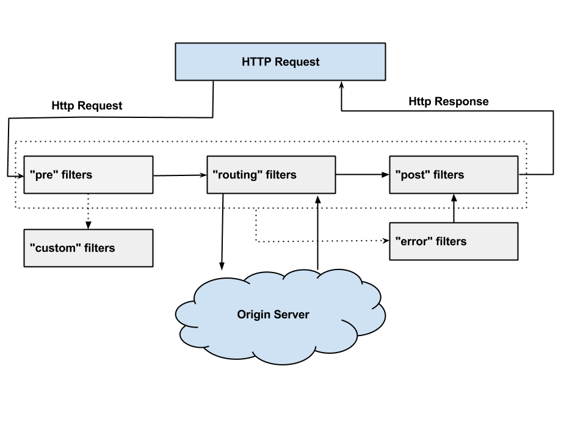

<!DOCTYPE html>
<html lang="en">
<head>
  <meta charset="utf-8" />
  <meta http-equiv="X-UA-Compatible" content="IE=edge" />
  <meta name="HandheldFriendly" content="True" />
  <meta name="viewport" content="width=device-width, initial-scale=1.0" />
  <meta name="robots" content="" />

  <link href="https://fonts.googleapis.com/css2?family=Source+Code+Pro:ital,wght@0,400;0,700;1,400&family=Source+Sans+Pro:ital,wght@0,300;0,400;0,700;1,400&display=swap" rel="stylesheet">

    <link rel="stylesheet" type="text/css" href="./theme/stylesheet/style.min.css">


    <link id="pygments-light-theme" rel="stylesheet" type="text/css"
          href="./theme/pygments/github.min.css">


  <link rel="stylesheet" type="text/css" href="./theme/font-awesome/css/fontawesome.css">
  <link rel="stylesheet" type="text/css" href="./theme/font-awesome/css/brands.css">
  <link rel="stylesheet" type="text/css" href="./theme/font-awesome/css/solid.css">


  <link rel="shortcut icon" href="./images/favicon.ico" type="image/x-icon">
  <link rel="icon" href="./images/favicon.ico" type="image/x-icon">


 

<meta name="author" content="Walter Fan" />
<meta name="description" content="Daily minute" />
<meta name="keywords" content="pattern, tech">


  <meta property="og:site_name" content="Walter Fan's Blog"/>
  <meta property="og:title" content="管道模式的妙用"/>
  <meta property="og:description" content="Daily minute"/>
  <meta property="og:locale" content="en_US"/>
  <meta property="og:url" content="./guan-dao-mo-shi-de-miao-yong.html"/>
  <meta property="og:type" content="article"/>
  <meta property="article:published_time" content="2020-06-09 10:20:00+08:00"/>
  <meta property="article:modified_time" content="2020-06-09 19:30:00+08:00"/>
  <meta property="article:author" content="./author/walter-fan.html">
  <meta property="article:section" content="Tech"/>
  <meta property="article:tag" content="pattern"/>
  <meta property="article:tag" content="tech"/>
  <meta property="og:image" content="./images/walterfan.jpg">

  <title>Walter Fan's Blog &ndash; 管道模式的妙用</title>


</head>
<body class="light-theme">

<aside>
  <div>
    <a href="./">
      
    </a>

    <h1>
      <a href="./">Walter Fan</a>
    </h1>

    <p>手握灵珠常奋笔, 心开天籁不吹箫</p>


    <nav>
      <ul class="list">


          <li>
            <a target="_self" href="/pims/tao" >tao</a>
          </li>
          <li>
            <a target="_self" href="interest.html" >interest</a>
          </li>
          <li>
            <a target="_self" href="/wordpress" >notebook</a>
          </li>
          <li>
            <a target="_self" href="bookmark.html" >bookmark</a>
          </li>
          <li>
            <a target="_self" href="/webrtc/examples/index.html" >webrtc</a>
          </li>
          <li>
            <a target="_self" href="https://github.com/walterfan" >github</a>
          </li>
          <li>
            <a target="_self" href="https://www.jianshu.com/u/e0b365801f48" >技术文章</a>
          </li>
      </ul>
    </nav>

    <ul class="social">
      <li>
        <a class="sc-github"
           href="http://github.com/walterfan"
           target="_blank">
          <i class="fa-brands fa-github"></i>
        </a>
      </li>
      <li>
        <a class="sc-weibo"
           href="http://weibo.com/walterfan"
           target="_blank">
          <i class="fa-brands fa-weibo"></i>
        </a>
      </li>
    </ul>
  </div>

</aside>
  <main>


<article class="single">
  <header>
      
    <h1 id="guan-dao-mo-shi-de-miao-yong">管道模式的妙用</h1>
    <p>
      Posted on Tue 09 June 2020 in <a href="./category/tech.html">Tech</a>

    </p>
  </header>


  <div>
    <p>GoF 的大作 “设计模式：可重用面向对象软件的基础”是软件工程界中的不朽名著，模式是人们用来讨论问题和解决方案的。
模式记录了那些重复出现的问题，成因和相应的解决方案。</p>
<p>Christopher Alexander 在模式语言中对模式的定义如下：</p>
<blockquote>
<p>每个模式都是一个法则，由三部分组成，它表现为一种特定的上下文， 一个问题和一个解决方案之间的关系。</p>
</blockquote>
<p>回顾一下管道模式，在计算机世界最熟悉的莫过于一条竖线，将上一条命令的输出和下一条命令的输入联系了起来，妙用无穷。</p>
<p>例如，找出spring 框架中代码行数最多的10个文件</p>
<p>find . -type f -name *.java| grep -v "src/test" | xargs wc -l | grep -v " total" |sort -n |tail -10</p>
<ul>
<li>查找 java 文件</li>
<li>过滤掉测试文件</li>
<li>统计文件行数</li>
<li>过滤掉 wc -l 输出的 “n total” 行</li>
<li>按每一行开头的数字排序</li>
<li>找出最大的11 条</li>
<li>找出最前面的10条</li>
</ul>
<p>在一条管道里可以做什么？能做的事可太多了：</p>
<ul>
<li>过滤</li>
<li>转换</li>
<li>排序/比较</li>
<li>限定</li>
<li>等等</li>
</ul>
<p>应用：
* Web 应用常用的拦截器/过滤器，在请求被处理之前和之后拦截并操作一个请求和它的响应。
  javax.servlet.Filter, 在Spring 中把它扩展成 Filter Chain</p>
<ul>
<li>Netty 中大量应用的 channel pipeline </li>
</ul>
<p></p>
<ul>
<li>JDK stream API</li>
</ul>
<div class="highlight"><pre><span></span><code>int sum = widgets.stream()
        .filter(b -&gt; b.getColor() == RED)
        .mapToInt(b -&gt; b.getWeight())
        .sum();
</code></pre></div>

<ul>
<li><a href="https://docs.spring.io/spring-integration/reference/html/overview.html" referrerpolicy="no-referrer" rel="noopener noreferrer" target="_blank" title="Spring integration pipeline">Spring integration pipeline</a> 中的若干组件</li>
<li>通道 channel</li>
<li>过滤器 filter</li>
<li>转换器 transformer</li>
<li>路由器 router</li>
<li>切分器 splitter</li>
<li>聚合器 aggregator</li>
<li>服务激活器 service activator</li>
<li>通道适配器 channel adapter</li>
<li>
<p>网关 gateway</p>
</li>
<li>
<p><a href="https://github.com/Netflix/zuul" referrerpolicy="no-referrer" rel="noopener noreferrer" target="_blank" title="Spring Cloud Netflix Zuul">Spring Cloud Netflix Zuul</a></p>
</li>
</ul>
<p></p>
<p>Zuul 中定义了4种过滤器
  1）pre
  2）route
  3）post
  4) error
</p>
<ul>
<li><a href="https://cloud.spring.io/spring-cloud-gateway/2.2.x/reference/html" referrerpolicy="no-referrer" rel="noopener noreferrer" target="_blank" title="Spring Cloud gateway">Spring Cloud gateway</a></li>
</ul>
<h1 id="reference">reference</h1>
<ul>
<li><a href="https://cloud.spring.io/spring-cloud-static/spring-cloud-netflix/2.2.0.RELEASE/reference/html/" referrerpolicy="no-referrer" rel="noopener noreferrer" target="_blank" title="spring-cloud-netflix-reference">spring-cloud-netflix-reference</a></li>
<li><a href="https://netflixtechblog.com/announcing-zuul-edge-service-in-the-cloud-ab3af5be08ee" referrerpolicy="no-referrer" rel="noopener noreferrer" target="_blank" title="netflix-tech-blog-of-zuul">netflix-tech-blog-of-zuul</a></li>
</ul>
  </div>
  <div class="tag-cloud">
    <p>
      <a href="./tag/pattern.html">pattern</a>
      <a href="./tag/tech.html">tech</a>
    </p>
  </div>


  <div class="neighbors">
    <a class="btn float-left" href="./yong-mezzanine-da-zao-ni-de-ge-ren-bo-ke.html" title="用 Mezzanine 打造你的个人博客">
      <i class="fa fa-angle-left"></i> Previous Post
    </a>
    <a class="btn float-right" href="./virtual-memory-and-malloc-info.html" title="Virtual memory and malloc info">
      Next Post <i class="fa fa-angle-right"></i>
    </a>
  </div>

  <div class="related-posts">
    <h4>You might enjoy</h4>
    <ul class="related-posts">
      <li><a href="./shu-mei-pai-shang-de-yu-yin-shi-bie-yi.html">树莓派上的语音识别一</a></li>
      <li><a href="./yong-sai-kong-zhi-ji-zhu-de-bi-ji-san-twcc-zai-libwebrtc-zhong-de-shi-xian.html">拥塞控制技术的笔记三: TWCC 在 libwebrtc 中的实现</a></li>
      <li><a href="./yong-sai-kong-zhi-ji-zhu-de-bi-ji-er-twcc.html">拥塞控制技术的笔记二: TWCC</a></li>
      <li><a href="./yong-sai-kong-zhi-ji-zhu-de-bi-ji-yi-li-lun-pian.html">拥塞控制技术的笔记一: 理论篇</a></li>
      <li><a href="./phi-accrual-failure-detector.html">Phi Accrual Failure Detector</a></li>
    </ul>
  </div>


<!-- Disqus -->
<div id="disqus_thread"></div>
<script type="text/javascript">
    var disqus_shortname = 'wfblog';
    (function() {
        var dsq = document.createElement('script'); dsq.type = 'text/javascript'; dsq.async = true;
        dsq.src = '//' + disqus_shortname + '.disqus.com/embed.js';
        (document.getElementsByTagName('head')[0] || document.getElementsByTagName('body')[0]).appendChild(dsq);
    })();
</script>
<noscript>
    Please enable JavaScript to view comments.
</noscript>
<!-- End Disqus -->
</article>

<footer>
<p>&copy; 2010 ~ 2030  Walter Fan <a href="https://beian.miit.gov.cn" target="_blank">皖ICP备20001876号-1</a></p>
<p>
Built with <a href="http://getpelican.com" target="_blank">Pelican</a> using <a href="http://bit.ly/flex-pelican" target="_blank">Flex</a> theme
</p><!-- StatusCake -->

<!-- End StatusCake --></footer>  </main>

<script type="application/ld+json">
{
  "@context" : "http://schema.org",
  "@type" : "Blog",
  "name": " Walter Fan's Blog ",
  "url" : ".",
  "image": "./images/walterfan.jpg",
  "description": "an old programmer never die, he just branch to a new address."
}
</script>
</body>
</html>